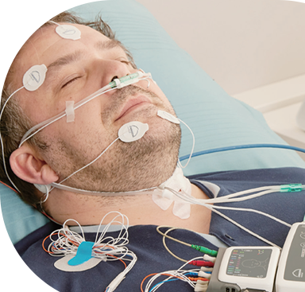
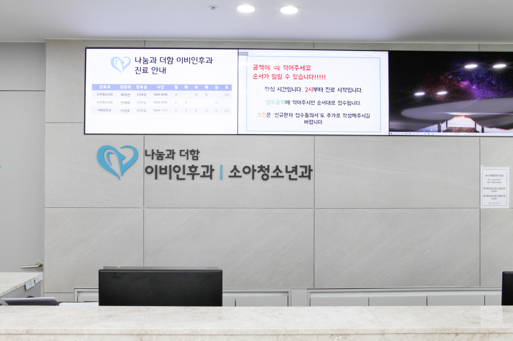
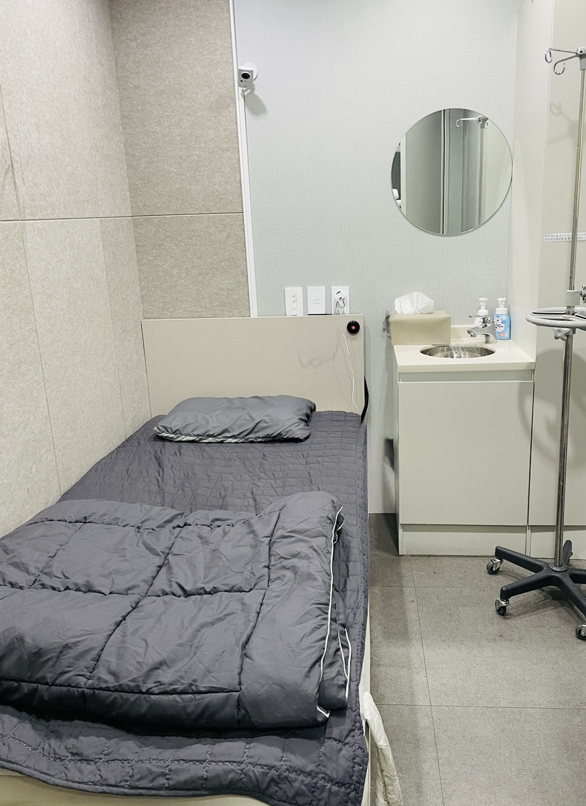

자도 자도 피곤한 하루,
동작구 수면다원검사로 숙면을 되찾으세요!
수면다원검사 인증 이비인후과 전문의 진료. 쾌적한 1인 수면 검사실과 원스톱 진단/치료 시스템으로 수면무호흡증과 코골이를 정확하게 치료합니다.
이런 증상이 있다면 수면다원검사가 필요합니다
아래 항목 중 해당되는 증상을 클릭하여 체크해 보세요.
심한 코골이와 수면 중 컥컥거림
주변 사람에게 피해를 줄 만큼 코골이가 심하거나 수면 중 숨이 멈췄다 컥하고 깹니다.
낮 동안 지속되는 심한 졸음과 피로감
충분한 시간 자도 아침에 머리가 띵하고 운전이나 작업 중 쏟아지는 졸음을 참기 어렵습니다.
수면 중 자주 깸 & 야간 뇨증
밤사이에 자다 깨서 화장실을 2회 이상 가거나 깊은 잠을 이루지 못하고 뒤척입니다.
아침에 느껴지는 두통과 구강 건조
자고 일어났을 때 목이 바짝 타고 입 안이 말라있으며 전두부 두통이 자주 발생합니다.
잘 조절되지 않는 고혈압 및 집중력 저하
약물 치료에도 혈압 조절이 잘 안 되거나 최근 기억력과 집중력이 뚜렷하게 저하되었습니다.
소아/청소년의 구강 호흡과 산만함
아이가 입을 벌리고 자며 주의가 산만하고 또래보다 성장이 더딘 경향이 있습니다.
현재 선택된 증상: 0개
항목을 선택하시면 수면무호흡증 위험도 및 검사 권장 여부를 안내해 드립니다.

수면다원검사(Polysomnography)란?
수면다원검사는 1인 전문 수면실에서 하룻밤 동안 취침하며 뇌파, 호흡, 혈중 산소포화도, 심전도, 수면 자세 등을 다각도로 측정하는 수면 질환 진단의 표준 검사(Gold Standard)입니다.
저녁 입원(21시~22시) 후 1인실 취침, 다음 날 아침(06시~07시) 퇴원하여 바로 일상 복귀 가능
뇌파(수면단계), 안구운동, 턱 근전도, 무호흡/코골이 횟수, 무호흡-저호흡 지수(AHI)
수면무호흡증 의심 환자의 경우 건강보험 급여 항목으로 지정되어 본인부담금은 약 10만 원대로 대폭 줄어들며, 실비보험 적용 시 추가 보장이 가능합니다.
나눔과 더함 이비인후과 시설 안내
환자분들이 안심하고 쾌적하게 검사와 진료를 받으실 수 있도록 마련된 최적의 공간입니다.


풍부한 임상경력과 전문성을 갖춘 대표원장 직접 진료
환자의 질환뿐만 아니라 삶의 질까지 깊이 배려하는 1:1 맞춤 정성 진료를 약속합니다.
대표 원장 이성호수면다원검사 인증의/이비인후과 전문의
학력 및 주요 경력
- 고려대 의과대학/대학원 졸업
- 고려대 안암병원 이비인후과 전공의 수료
- 고려대 안암병원 이비인후과 전문의/외래교수
학회 활동
- 대한이비인후과학회 정회원
- 대한수면학회 정회원
- 대한수면호흡학회 정회원
체계적인 수면 질환 치료 프로세스
초진 상담부터 다원검사, 판독, 맞춤 치료까지 4단계 전문 시스템으로 진행됩니다.
문진 및 원장 상담
수면 설문지 작성, 내시경 및 3D CT 촬영을 통해 상기도 구조와 코골이 원인을 1차 평가합니다.
1:1 수면다원검사
독립된 1인 전문 수면실에서 센서를 부착하고 하룻밤 수면 상태 데이터를 측정합니다.
정밀 판독 및 확진
전문의가 수집된 데이터(AHI 지수, 뇌파, 산소포화도)를 다각도로 정밀 분석하여 결과를 확진합니다.
맞춤 치료 (양압기/수술)
양압기(CPAP) 압력 설정 및 순응도 관리, 구강 내 장치, 또는 필요시 수술적 치료를 시행합니다.
수면다원검사 자주 묻는 질문 (FAQ)
검사를 준비하시는 환자분들이 가장 자주 궁금해하시는 내용입니다.
네, 수면무호흡증 의심 증상으로 전문의 진찰 후 검사를 시행할 경우 건강보험이 급여 적용되어 검사비의 약 80%를 지원받으실 수 있습니다. 또한 환자 본인이 가입하신 실손의료보험 약관에 따라 남은 본인부담금도 실비 청구가 가능합니다.
검사 당일 오후부터는 카페인 음료(커피, 녹차)와 음주, 낮잠을 피해주세요. 뇌파 및 피부 센서 부착을 위해 저녁 식사 후 세안과 머리를 감고 방문해 주시면 됩니다. 평소 드시던 만성질환 약물이 있다면 미리 의료진과 상담하세요.
보통 저녁 9시~10시경 내원하여 1인 수면실에서 센서 부착 및 취침을 준비합니다. 검사는 다음 날 아침 6시~7시경 종료되며, 검사실 내에 세면 시설이 갖추어져 있어 샤워 후 바로 출근 및 일상 복귀가 가능합니다.
독립된 고급 호텔급 1인 수면실과 방음/암막 커튼 시설, 최적의 온도/습도 관리 시스템이 제공됩니다. 센서 부착 후 평소처럼 편안하게 수면을 취하시면 되며, 최소 수면 시간만 확보되면 충분히 신뢰도 높은 판독이 가능합니다.
네! 수면다원검사 결과 수면무호흡증(AHI 5 이상 등)으로 확진될 경우, 양압기 임대료 역시 건강보험 지원 혜택을 받아 월 1~2만 원대의 부담 없는 비용으로 순응도 관리 및 임대가 가능합니다.
본원에서는 소아청소년과 진료를 병행하고 있어 소아 구강호흡, 아데노이드 편도 비대로 인한 소아 수면 장애 정밀 진단이 가능합니다. 아이들의 눈높이에 맞춘 안전하고 편안한 검사를 진행합니다.
오시는 길 & 진료시간
지하철 7호선 상도역 2번 출구 인근으로 편리하게 방문하실 수 있습니다.
도로명 주소
서울특별시 동작구 만양로 5-1 301호 (상도동)
지하철 이용 시 (상도역 도보 2분)
지하철 7호선 상도역 2번 출구 나온 후 만양로 방향 도보 약 150m 이동
전화 문의 & 예약
02-6929-4565 (클릭시 전화 연결)
외래 진료시간
평일: 09:00 ~ 19:00 (점심시간 13:00~14:00)
토요일: 09:00 ~ 14:00 (점심시간 없음)
일요일/공휴일: 휴무 (*수면다원검사는 사전예약제로 야간 운영)

수면다원검사 & 외래 진료 예약
네이버 예약을 이용하시면 기다림 없이 실시간으로 예약이 가능합니다.